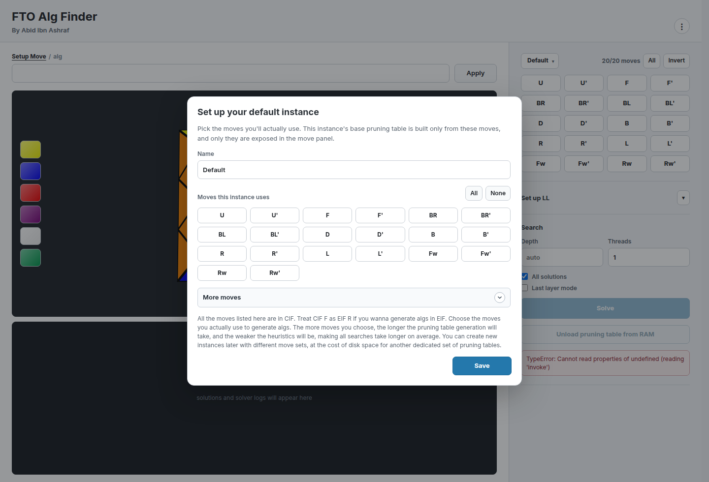

Click the puzzle
Set colors manually, swap pieces, twist corners, or use partial-position input from the viewer.
Face-Turning Octahedron Solver
Paint the puzzle, restrict the moves you actually use, and let the Rust solver grind through exact depths, last-layer cases, and alg combinations.
The idea
FTO Alg Finder is a desktop solver for building and testing practical Face-Turning Octahedron algorithms. It supports graphical input, setup strings, restricted movesets, saved solver instances, partial-position input, last-layer searching, and an alg combiner for trying intermediate sets without doing the boring bookkeeping by hand.
Set colors manually, swap pieces, twist corners, or use partial-position input from the viewer.
Run auto or exact-depth searches with selected moves, banned moves, threads, and all-solution mode.
Try ordered pairs and triples of intermediate algorithms with optional U-slot insertion.
Screenshots

System requirements
Downloads

Portable x86_64 build for most Linux distros. No distro package manager required.
Download AppImage Universal Linux buildSource build: cd main && npm install && npm run tauri build